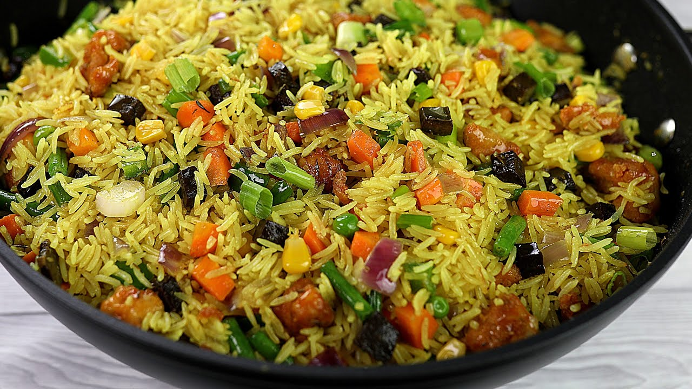

Nigerian Fried Rice is a popular Nigerian dish made with rice,
mixed vegetables, liver, and aromatic spices which gives it unique taste and appearance. It is commonly
served at parties, celebrations, events and family gatherings.

Ingredients
3 cups of long-grain parboiled rice
1 cup of diced carrots
1 cup of green peas
1 cup of diced green beans
1 cup of sweet corn
1kg of diced liver
1 medium onion
2 tablespoons of vegetable oil
2 seasoning cubes
1 teaspoon of curry powder
1 teaspoon of thyme
Salt to taste
Chicken stock
Preparation
Wash the rice thoroughly and parboil it until it is partially cooked.
Drain the rice and set it aside.
Heat vegetable oil in a large pot and sauté the chopped onions.
Add the diced liver and stir-fry for a few minutes.
Add the carrots, green beans, green peas, and sweet corn.
Season with curry powder, thyme, seasoning cubes, and salt.
Add the rice and chicken stock, then stir thoroughly.
Cover and cook on low heat until the rice is tender and the liquid is absorbed.